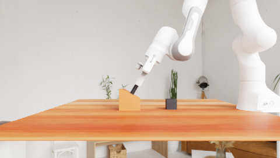

Demonstration content演示内容
Contributions are task-dependent: on Pull Out Key, tactile–motion matches the full context; on Lift Bottle, demonstration vision still helps.
各模态的贡献因任务而异：在 Pull Out Key 上，触觉–运动演示已与完整上下文持平；在 Lift Bottle 上，演示中的视觉信息仍有帮助。
TACTILE—ETA
Embodied Task Agents Can Perform Fine Manipulation through Tactile In-Context Learning
† Corresponding authors† 通讯作者
15.75%→24.00%
Average simulation success when tactile observations are added to the same two expert demonstrations
在同样两条专家演示中加入触觉观测后，四个仿真任务的平均成功率
0/5→3/5
Real-robot successes on each task with one multimodal demonstration
真机两个任务上，各自加入一条多模态演示后的成功次数
0
Parameter updates — experience is supplied entirely through context
次参数更新：经验完全通过上下文提供
Learning from contact experience.
Acting with a frozen agent.
从接触经验中学习，
由冻结的智能体执行。
Can embodied task agents use tactile experience to perform fine manipulation without task-specific model training? We investigate this capability through Tactile-ETA, a system that incorporates tactile experience into an embodied task agent through in-context learning. Successful expert demonstrations show how contact changes during manipulation. We pair each recorded robot movement with its camera views and bilateral tactile observations. We keep tactile observations at the start and end of each movement and add two neighboring time points when the tactile images change markedly in between. The agent combines these demonstrations with current vision, tactile observations, and proprioception to select actions through general-purpose robot tools, without updating model parameters.
Across four simulated manipulation tasks, adding tactile observations to the same two expert demonstrations increases average success from 15.75% to 24.00%, with current sensing and execution interfaces held fixed. Further experiments show that performance depends on the sensory content and representation of demonstrations, while comparing agent models on Lift Bottle reveals substantial differences under the same system configuration. On the real-robot tasks, demonstrations with aligned visual and tactile observations increase the task success rate from 0% to 60%. These findings demonstrate the feasibility of using tactile experience in context for fine manipulation and suggest a path toward extending embodied task agents to additional sensory inputs.
具身任务智能体能否在不做任务特定模型训练的前提下，借助触觉经验完成精细操作？我们通过 Tactile-ETA 研究这一能力：该系统以上下文学习的方式，把触觉经验引入具身任务智能体。成功的专家演示展示了操作过程中接触状态如何变化。我们将每段记录下的机器人运动与对应的相机画面和双侧触觉观测配对：保留每段运动起止时刻的触觉观测，并在中途触觉图像发生明显变化时，额外加入两个相邻时间点。智能体将这些演示与当前的视觉、触觉和本体感知相结合，通过通用机器人工具选择动作，全程不更新模型参数。
在四个仿真操作任务上，保持当前感知与执行接口不变，仅在相同的两条专家演示中加入触觉观测，平均成功率就从 15.75% 提升到 24.00%。进一步实验表明，性能取决于演示的感知内容与表示方式；在 Lift Bottle 任务上比较不同的智能体模型，也发现相同系统配置下存在显著差异。在真机任务上，包含对齐视觉与触觉观测的演示将任务成功率从 0% 提升到 60%。这些结果说明了在上下文中利用触觉经验进行精细操作的可行性，也为具身任务智能体接入更多感知模态提供了一条路径。
ASTRA · TACTILE FEEDBACKASTRA · 触觉反馈
A tactile observation, an explicit interpretation, and a corrective action.
One recorded Insert Tube execution, step by step.一次触觉观测、一段明确的解读、一个纠正动作。
逐步回放一次真实记录的 Insert Tube（插管）执行过程。
01 The observation观测

After action 7
Current vision + tactile feedback
第 7 个动作之后
当前视觉 + 触觉反馈
02 Astra’s interpretation & decisionAstra 的解读与决策
“The left tactile image now shows pronounced distortion.
I’ll back off slightly and make a small lateral correction before advancing again.”
“左侧触觉图像现在出现了明显形变。我先稍微后退，做一个小幅横向修正，再继续推进。”
Verbatim agent message · after action 7智能体原始消息（逐字引用）· 第 7 个动作之后
03 What the robot executed机器人实际执行
Retreat + lateral correction后退 + 横向修正
The robot then resumed advancing.随后机器人恢复推进。
✓ Subsequent native task success✓ 之后任务按环境原生判定成功The message records Astra’s interpretation; the execution trace records the movement and later outcome.消息记录的是 Astra 的解读；运动和最终结果来自执行轨迹记录。
Both agents receive current vision and tactile feedback. These are individual executions; aggregate results are reported below.两者都能获得当前视觉与触觉反馈。这里展示的是单次执行，整体统计见下文。
THE METHOD方法
Fine manipulation depends on how contact changes during an action. Tactile-ETA gives a frozen embodied task agent access to this experience through successful expert demonstrations — robot motion, camera views and bilateral touch, aligned in time. No task-specific training or parameter updates are required.精细操作取决于动作过程中接触如何变化。Tactile-ETA 通过成功的专家演示，把这种经验提供给冻结的具身任务智能体：机器人运动、相机画面与双侧触觉在时间上对齐。无需任务特定训练，也不更新模型参数。
Each expert episode is split at its recorded action boundaries. A segment pairs measured end-effector translation, rotation and finger change with before/after head and wrist views and bilateral tactile sequences from the same interval.
每条专家演示按记录的动作边界切分。每一段包含实测的末端平移、旋转和手指开合变化，以及同一时间区间内前后时刻的头部/腕部相机画面和双侧触觉序列。
Endpoints are always kept. Patch tracking scores the change between consecutive frames by the 75th-percentile displacement (threshold: 2 px). If the peak change passes the threshold, the adjacent pair around it is added — at most four frames per fingertip.
始终保留起止两帧。通过图像块跟踪，用位移的 75 分位数衡量相邻两帧之间的变化（阈值 2 像素）；若最大变化超过阈值，再补上它前后相邻的两帧。每个指尖最多保留 4 帧。
Demonstrations are supplied once at episode start. The agent acts through general-purpose tools (move_to, observe); after each motion it receives camera views, robot state, tracking feedback and tactile strips selected by the same rule.
演示在每个回合开始时一次性提供。智能体通过通用工具（move_to、observe）行动；每次运动后，它会收到相机画面、机器人状态、到位反馈，以及按同一规则选出的触觉图像条。
SIMULATION仿真实验
Four UniVTAC tasks, 100 trials per task and condition. With the same two expert episodes and current sensory inputs, adding historical tactile observations raises average success from 15.75% to 24.00%.四个 UniVTAC 任务，每个任务、每种配置各 100 次试验。在专家演示（同样两条）和当前感知输入都不变的情况下，加入演示中的触觉观测，平均成功率从 15.75% 提升到 24.00%。
| Task任务 | No demos无演示Vision视觉 | No demos无演示Vision + touch视觉 + 触觉 | Visual–motion视觉–运动演示2 demos2 条演示 | Tactile-ETA2 demos + touch2 条演示 + 触觉 | Gain提升vs. visual–motion相对视觉–运动 |
|---|---|---|---|---|---|
| Insert Tube插管 | 3 | 15 | 15 | 32 | +17 |
| Lift Can提起易拉罐 | 0 | 1 | 3 | 2 | −1 |
| Lift Bottle提起瓶子 | 7 | 3 | 27 | 36 | +9 |
| Pull Out Key拔出钥匙 | 2 | 6 | 18 | 26 | +8 |
| Average平均 | 3.00 | 6.25 | 15.75 | 24.00 | +8.25 |
Gains vary by task. Lift Can remains difficult under all configurations.提升幅度因任务而异；Lift Can 在所有配置下都很困难。
Same two expert episodes and 100 initial conditions per task; current vision, touch, proprioception and feedback held fixed.使用同样两条专家演示，每个任务 100 个初始条件；当前视觉、触觉、本体感知和执行反馈保持不变。
Contributions are task-dependent: on Pull Out Key, tactile–motion matches the full context; on Lift Bottle, demonstration vision still helps.
各模态的贡献因任务而异：在 Pull Out Key 上，触觉–运动演示已与完整上下文持平；在 Lift Bottle 上，演示中的视觉信息仍有帮助。
More frames is not better: keeping every tactile frame drops success to 2%, while endpoints alone add nothing over no tactile context.
帧数不是越多越好：保留全部触觉帧时成功率跌到 2%；只保留起止帧则与不含触觉没有差别。
Identical demonstrations, tools and budgets — yet large differences across models. Context design must be considered together with the agent’s ability to use it.
演示、工具和预算完全相同，不同模型的表现却差异很大。设计触觉上下文时，需要同时考虑智能体利用它的能力。
Success rates (%), 100 trials each. With 1, 2 and 4 complete demonstrations, average success over four tasks is 22.50%, 24.00% and 19.00%.成功率（%），每项 100 次试验。使用 1、2、4 条完整演示时，四个任务的平均成功率分别为 22.50%、24.00% 和 19.00%。
ON THE ROBOT真机实验
reBot Arm B601-RS with a vitai GF225 tactile gripper. Both configurations receive current vision, touch and robot state; Tactile-ETA additionally receives one human demonstration.reBot Arm B601-RS 机械臂，配备 vitai GF225 触觉夹爪。两种配置都能获得当前视觉、触觉和机器人状态；Tactile-ETA 额外获得一条人工演示。
Wipe Board execution on the real robot. Playback is accelerated 20×.真机擦白板（Wipe Board）执行过程，20 倍速播放。
@misc{wang2026tactileeta,
title = {Embodied Task Agents Can Perform Fine Manipulation through Tactile In-Context Learning},
author = {Wang, Yubang and Huai, Zezheng and Zhang, Yifei and Wu, Jinhao and Chen, Yitong and Zhang, Haozhe and Li, Sixian and Gong, Jingjing and Lin, Zhenyang and Chen, Ziyang and Qiu, Xipeng},
year = {2026},
url = {https://no-518.github.io/tactile-eta/}
}